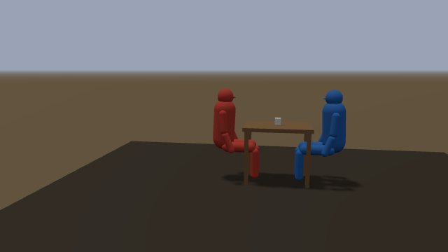
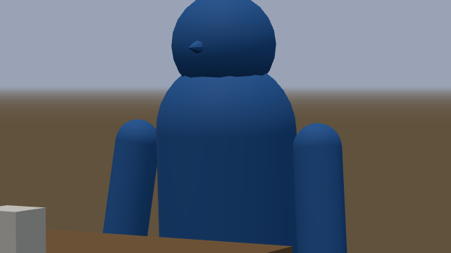
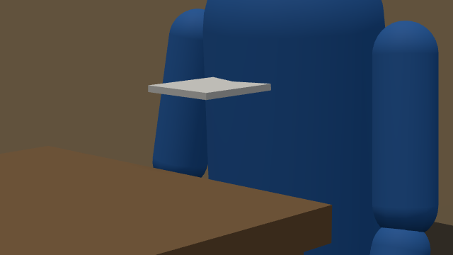
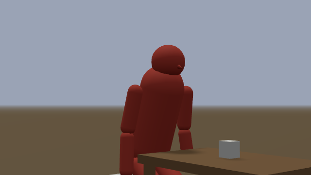
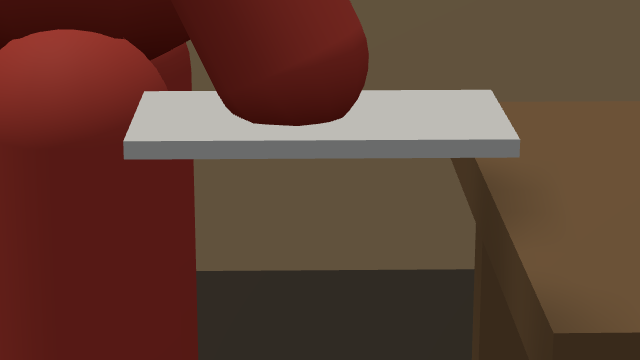
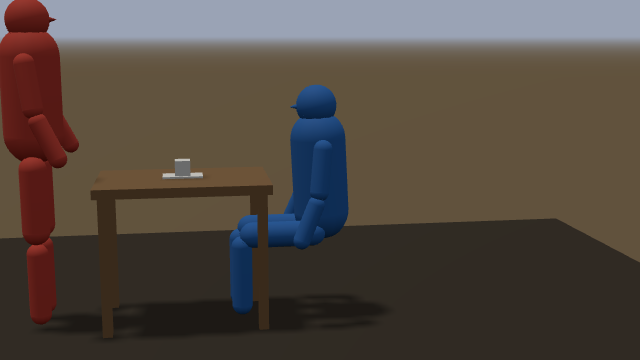

Each shot rendered from its camera on the floor plan (position, height, lens). Grey place, coloured mannequins, white props. Free, no AI.

Establish the shop, the brothers, and the apparently ordinary tea meeting.

Give Saman his own coverage and establish the cheerfulness that will disappear.
Make the discovery begin with Nimal's look before revealing its object.

Reveal the folded deed from Nimal's side and bridge directly into his grasp.

Keep the seizure and rise physically continuous while Saman loses control of the meeting.

Deliver the confrontation through the strongest tactile image: the deed striking the table.
Hold Nimal's accusation in his face rather than inventing dialogue.
Give Saman's admission its own uninterrupted face shot and let shame replace the earlier cheerfulness.

Return to the shared space with the brothers' changed relationship plainly visible.